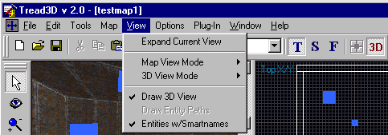
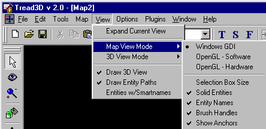
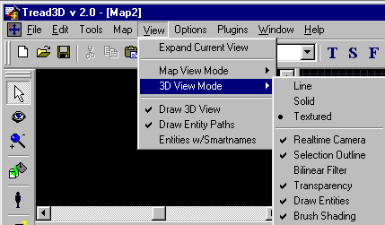

|
|
|---|
View Menu

Expand Current View This will fill the Editor Workspace with the cell/element which is active.
Map View Mode This will allow you to choose some 3D rendering options.
|  |
Windows GDI 3D render mode. OpenGL - Software 3D render mode. OpenGL - Hardware 3D render mode. Selection Box Size This will toggle on/off the rendering of a selected brushes size. Solid Entities This will toggle on/off the rendering of entities as solids. Entity Names This will toggle on/off the rendering of entity names. |
3D View Mode This will allow you to choose how you want the 3D view to be rendered.
|  |
Line This selection will render in line mode (no faces are rendered). Solid This selection will render in solid mode using "white" as a texture. Solid - Shaded This selection will render in solid mode using "shades of grey" as textures. Textured This selection will render in solid mode using textures. Realtime Camera This will toggle on/off the camera view being rendered while moving. Selection Outline This will toggle on/off the rendering of a selected brushes outline. Bilinear Filter This will toggle on/off the bilinear filter. Transparency This will toggle on/off the transparency mode. Draw Entities This will toggle on/off the rendering of entities. |
Draw 3D View This will toggle on/off the 3D view.
Draw Entity Paths This will toggle on/off the ability to render entity paths.
Entities w/Smartnames This will toggle on/off the ability to show entity names.